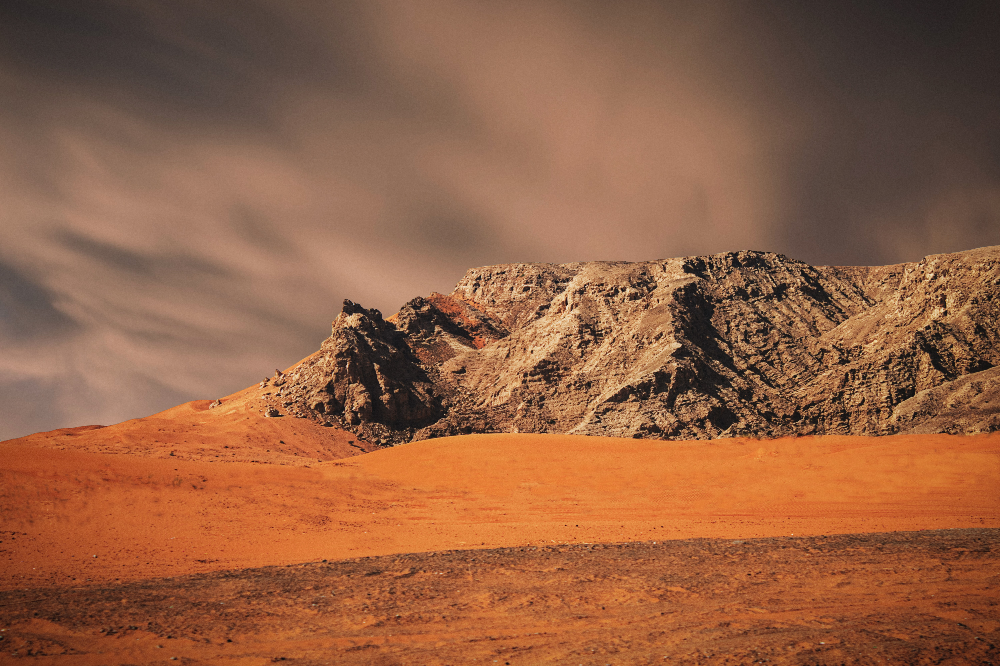

Реки на Марсе
Исследователи обнаружили крупные запасы воды в системе каньонов Марса
Исследователи обнаружили крупные запасы воды в системе каньонов Марса
Бушуют сильные лесные пожары. Из-за стремительного распространения пламени сегодня была перекрыта федеральная трасса «Енисей»
Сильные и продолжительные дожди пройдут в горных районах республик Северного Кавказа, в южных районах
7 апреля по Шимановску разъезжал автомобиль, водитель которого полностью игнорировал правила дорожного движения, подвергая опасности жизни других людей.
Брянский блогер Владимир Чесалин разместил на видеохостинге YouTube очередной ролик. Он утверждает, что снял ничто иное как НЛО.